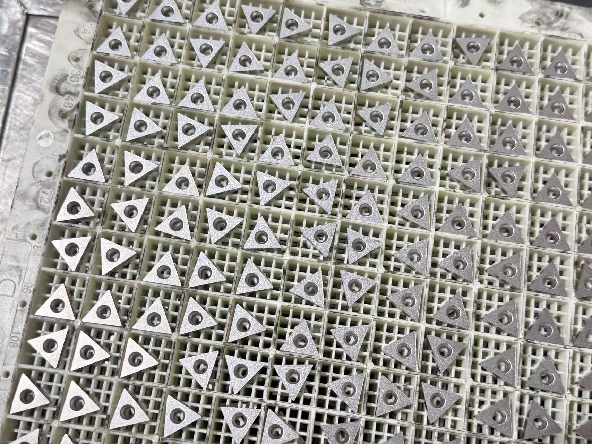
Turning Inserts
CNMG, WNMG, TNMG, DNMG, CCMT and other ISO turning inserts for steel, stainless steel, cast iron and aluminum.
Explore →Turning inserts, milling inserts, threading inserts, grooving inserts, PCD inserts, CBN inserts, cermet inserts and carbide end mills for distributors, machine shops and OEM supply projects.
Send an ISO code, drawing, sample photo or model list. We will check availability, MOQ, packing and factory pricing.
Select from standard and OEM carbide tools for CNC turning, milling, threading, grooving, PCD / CBN machining, cermet finishing and carbide end milling.

CNMG, WNMG, TNMG, DNMG, CCMT and other ISO turning inserts for steel, stainless steel, cast iron and aluminum.
Explore →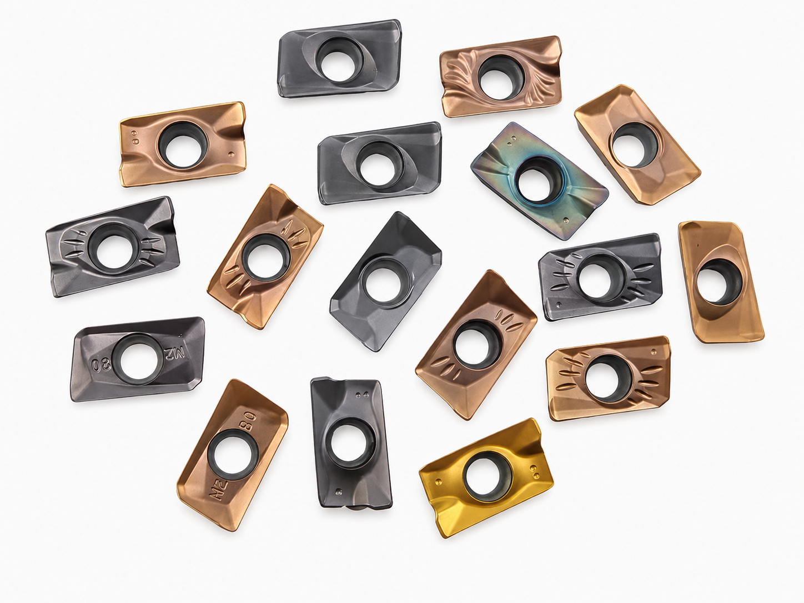
SEKN, APKT, APMT, RPMT and face milling inserts for roughing, shoulder milling and finishing.
Explore →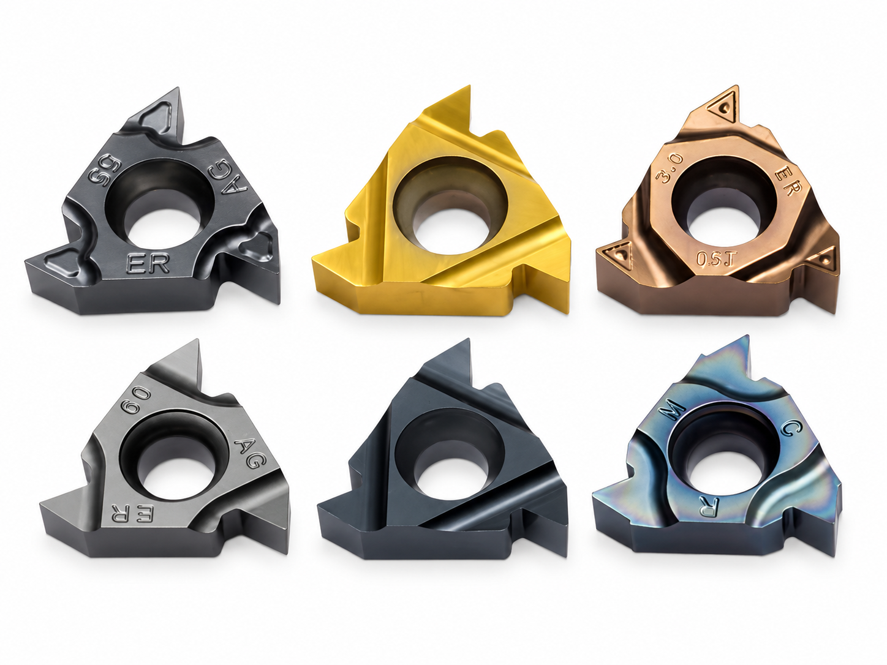
16ER, 16IR and custom thread profiles for external and internal threading jobs.
Explore →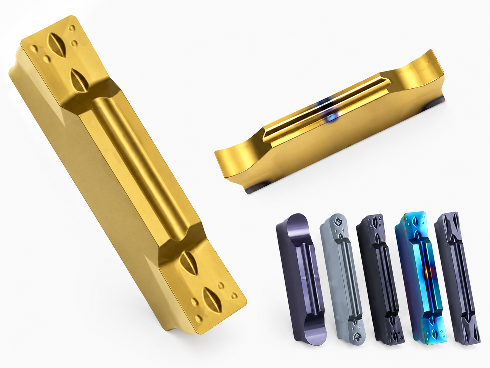
MGMN and grooving / parting inserts with toolholder matching and OEM supply support.
Explore →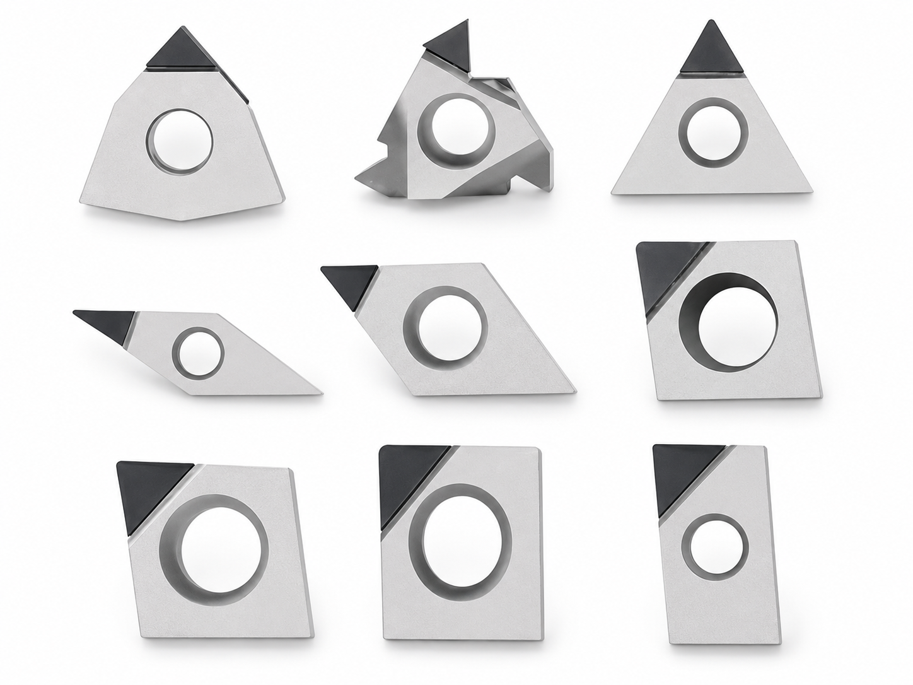
PCD inserts for aluminum, copper, non-ferrous alloys and high-wear finishing applications.
Explore →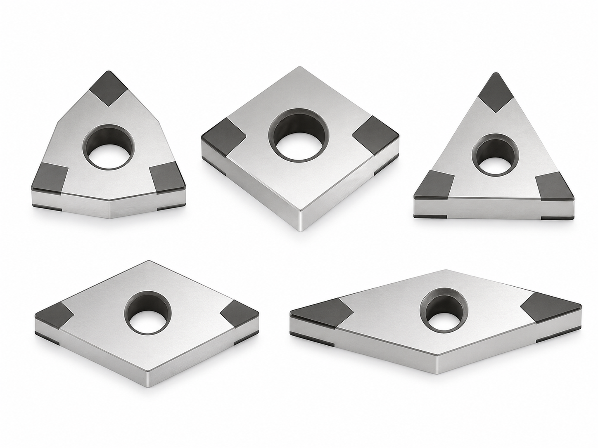
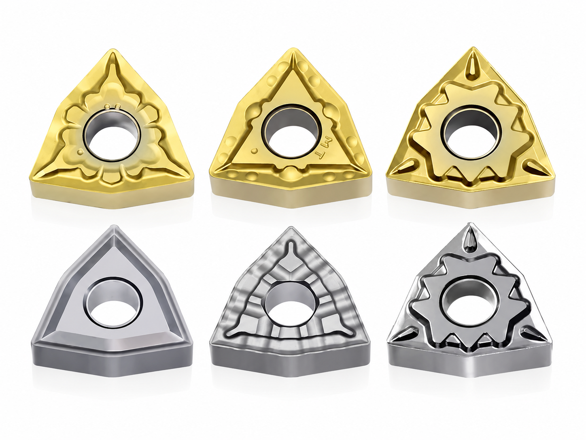
Cermet inserts for stable finishing, low built-up edge and clean surface quality.
Explore →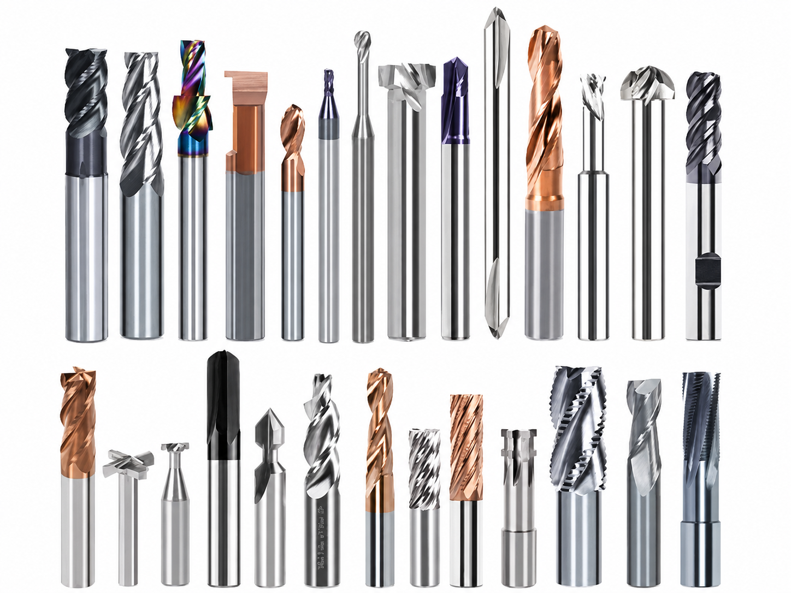
2-flute, 3-flute, 4-flute, ball nose, corner radius and roughing end mills.
Explore →Production workshops support powder pressing, coating / finishing, tooling support and batch supply for standard and OEM carbide insert orders.
Controlled compact pressing for stable insert blanks and batch consistency.
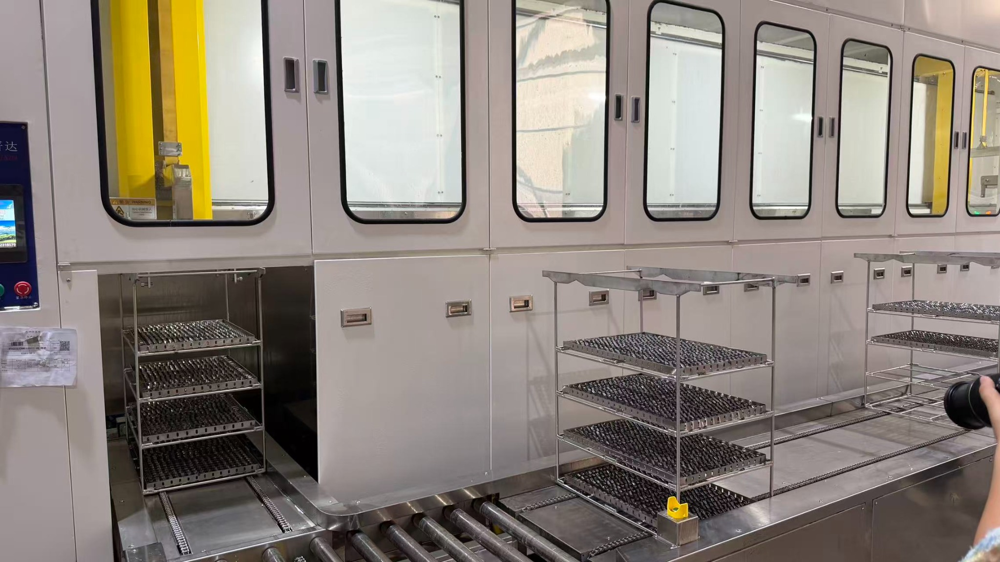
Coating and finishing processes for wear resistance and surface stability.
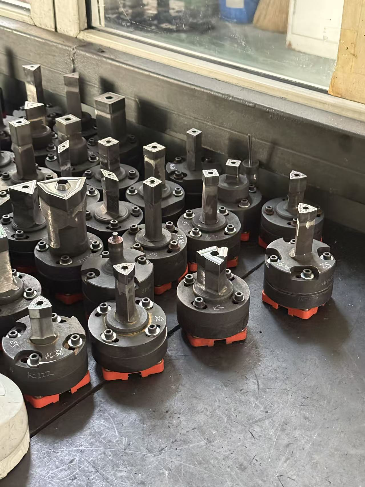
Toolholders, fixtures and special tooling support for customer projects.
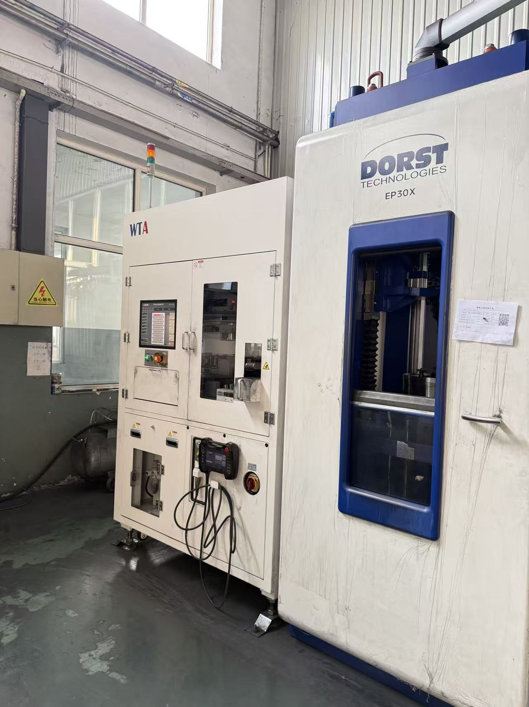
Workshop capacity for standard insert supply and repeat OEM orders.
Inspection steps include material checks, cutting-edge inspection, dimensional checks and physical-property verification before shipment.
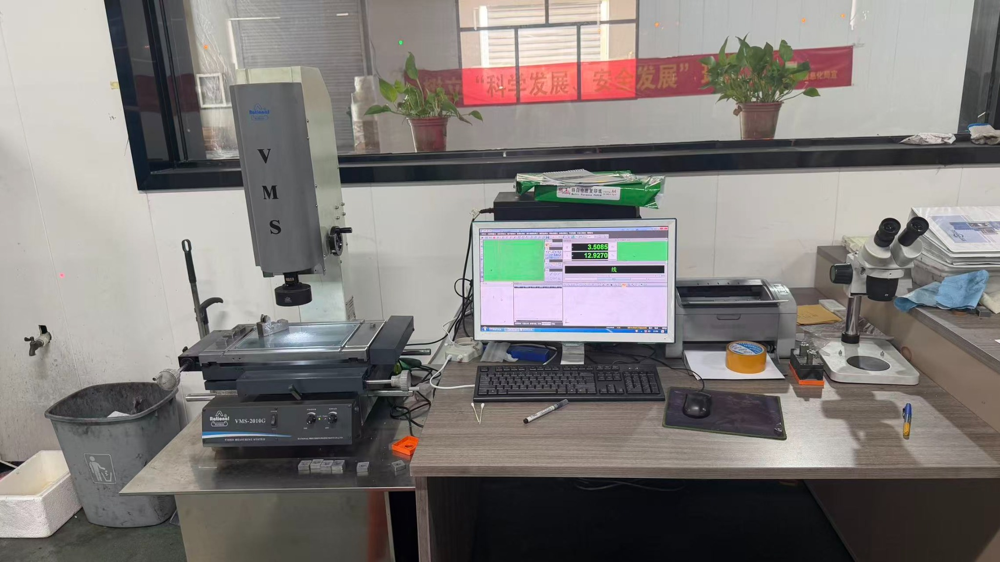
Raw material and batch checks before production and finishing.
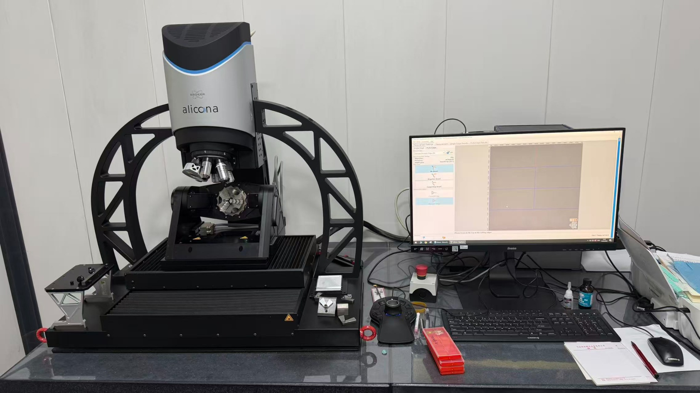
Cutting edge, radius and surface condition checked under magnification.
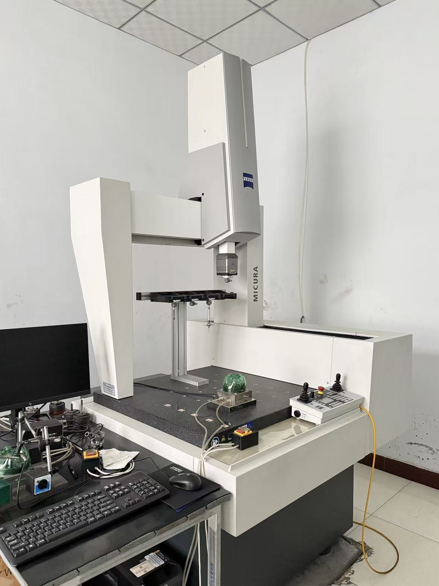
Dimensional checks for precision components and custom projects.
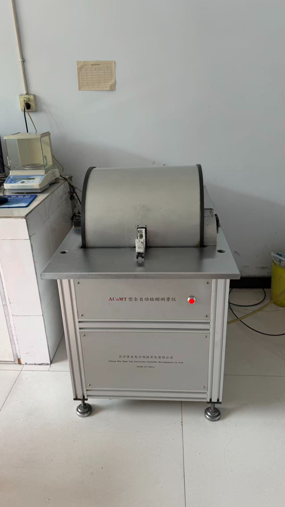
Hardness, magnetic property and coating-related checks where required.
Inspection reports and sample confirmation can be arranged before bulk shipment.
Customer names are hidden for privacy. These quotes are selected from actual buyer conversations and repeat-order feedback.
We tested the product and we’re happy with it.
— Trial-order feedbackWe are still using the first inserts after 21 working days. For the first 15 days, performance was almost the same as day one, and the surface finish is still good.
— Repeat-use feedbackEverything is going well so far. We are still testing the limits, but the inserts are continuing to work.
— Follow-up feedbackCarbideAxis Tools supports RFQs for cast iron, superalloy, hardened steel, non-ferrous materials, glass / wood / composites, automotive wheel hubs and other special jobs.
Practical notes on insert codes, coatings, quotation details and OEM supply.
Compare geometries, cutting stability and roughing applications.
Read article →Key factors for choosing coating, flute count and feed direction.
Read article →A buyer checklist for clear, accurate and fast RFQs.
Read article →Common ordering details are listed here so you can decide whether to send an RFQ, model list, drawing or sample photo.
Most insert orders start from 10 pcs. Standard carbide end mills can start from 1 pc.
Neutral packaging and private label packaging are both supported for repeat and OEM orders.
Send ISO code, drawing, sample photo, model list, material and quantity.
Common turning, milling, threading, grooving, PCD, CBN and cermet models can be checked by code or photo.
Choose the closest product group and send the required details directly. We will check the tool family, MOQ, packing and available supply before quoting.
Short paths for buyers searching by product code, material or application.
Short answers to common questions before buyers send a quotation request.
Most insert orders start from 10 pcs. Standard carbide end mills can start from 1 pc.
Yes. Neutral packaging and private label packaging are both supported for repeat and OEM orders.
Send the ISO code, drawing, sample photo, model list, workpiece material, quantity and current cutting problem.
Yes. Send Excel, PDF, screenshots or package labels, and we will check available models by product family.
We can check standard replacement options, OEM production and packing requirements before quoting.